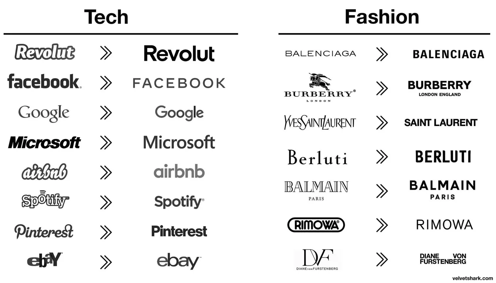

Why company logos keep getting simpler
Originally posted on LinkedIn, December 17, 2024.
Logos increasingly look alike for a reason. It is not laziness or a lack of creativity. It is psychology, and Google, Microsoft, and Airbnb understood it long before most companies did.
Our brains process visuals 60,000 times faster than text. The simpler the visual, the faster we process it. Big brands stumbled onto this rule, which is why more of them now use minimalist logos built from:
- Sans-serif fonts
- Basic geometric shapes
- Limited colors
Simple logos also work everywhere, from app icons and website headers to smartwatches. In a world of endless distraction, simplicity cuts through the noise and creates trust. This is not just a trend. It is evolution.
The numbers reflect that shift. 42% of consumers see modern logos as more trustworthy, while simple shapes affect 75% of consumer perception.
Brands are not alone. Smart founders apply the same principle to their personal brands, making them easy to recognize, authentic, and, most importantly, memorable.
